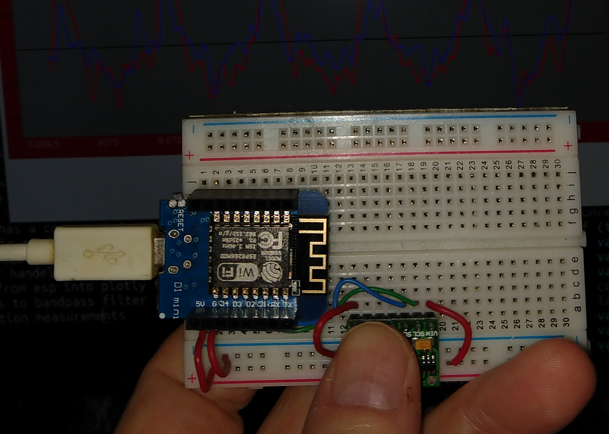

This project collects data from a max30100 heart rate monitor device and presents a webpage to a connected browser displaying the real time data as well as the dsp derived Pulse Rate and Oxygen concentration results. Hardware Required :
- ESP8266 module
- MAX30100 module
- Four wire interdevice connections (3.3v, gnd and I2C - sda gpio18 - scl gpio18)
- A computer running a browser
This project uses the Espressif IoT Developemnt Framework to compile user application code, build the ESP code image and flash it into the ESP device. The setup is pretty easy and well documented on several websites.
The ESP device establishes a wi-fi connection, then configures the max30102 to collect 100 samples per second of red and IR data. It then continuously runs two tasks: 
- read max30102 buffer pointers and contruct a read of available sample data with I2C bus, configure data into words and load into local buffer
- setup tcp server socket and listen for http request. When http request packet is received it is parsed to extract whether it is requesting a)a file, like index.html or index.css or a js file, b) a request for a data string dump or c)a POST append containing variables altered within the client browser (or a curl command)
This nets a single C program with no non-esp-idf dependencies of about 300 lines, most of which were cut and pasted from the sdk examples folder. The other coding portion of this program is an .html (about 200 lines) that is embedded in the esp read only memory at compile time (if referenced in component.mk). The .html file is via tcp to your browser when the esp's url is addressed.
The JavaScript in the .html has a couple of functions:
- control of plot modes, ie run/pause, display data type raw/filtered
- send GET query variable data from browser tags to esp (for things like controlling led brightness)
- downloads plotly.js for handelling graph real time output display
- formats data returned from esp into plotly format
- performs dsp operations to bandpass filter (4 pole butterworh) raw data and extract and display heartrate and oxygen concentration measurements
The video starts out with no finger on the max30102 so it just shows noise. When it finger is placed on the module there is a big spike in the graph due to the samples shotting up to almost fullscale, the IIR filter takes a little while to filter out the dc, the dc autoranges out, and the heart beats show up pretty clearly. The intensity of red and ir diodes can be changed, the updating can be halted and the unfiltered data can be displayed. The heart rate and SpO2 concentrations are calculated and displayed.